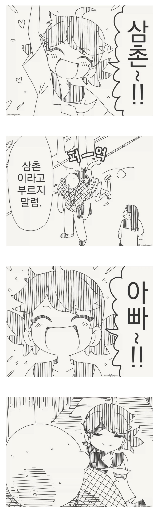
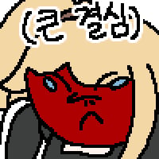

술렁 술렁

술렁 술렁
OO아빠!!


와씨 눈빛묘사 보소ㅋㅋㅋ
진짜 만신이네
이 작가는 진짜 기본기 엄청 탄탄함
가끔 머리속에 뭐가 들었는지 궁금할정도
뇌들었음
그런데 왜 장편연재는.. ㅠㅠ
여보라고 부르렴
아 일본어면 '(애)아빠'로도 쓰이잖아.....
파파 아닐까?
ㅇㅇ 일본어로 부부사이에서 부인이 남편한테 '파파'라고 부르기도 함
파파카츠의 아빠로도 쓰이지
원문이 파파면 파파카츠로 의심받는 상황인 듯
아버지가 뭐이니.. 삼촌이라 부르라!
아 왜요 나이차가 있구만
그러며는 삼촌 천만원짜리 섯다 한판 치실까?
자연으로 칠래 구라로 칠래?
제가 구라가 되겠습니까~? 자연빵으로 치시죠
자연빵을 치재놓고는 밑장을 빼서 구땡을 주더라고.
선생이자 아빠이자 삼촌...?
아니 ㅋㅋㅋㅋ 솔까 세번째 까지는 아빠 대신 입양했나보다 라고 생각할 수 있는데 이걸 막짤 하나로 뒤집네 ㅋㅋㅋㅋㅋㅋㅋㅋ 진짜 미친놈인가
아 파파카츠였어?
난 또 탁란인줄
와 표정
아빠가 아니라 파파 같은데;
그니까 제이미 라니스터처럼 난 사실 너의 심촌이 아니라 아버지란다 이런거?
그니깐 우리가 보통생각하는 그 아빠가 아니란 말이지?
ㅋㅋㅋ 어릴때 7살때 쯤이었나 아버지랑 외출 나갔더니 "밖에선 삼촌이라고 불러" 라고 하시길래 "응! 삼촌!" 하고 집가서 엄마한테 그대로 고자질함 아직도 가끔 이걸로 쿠사리 드심
엥? 그러니까 쟤네 엄마랑 바람핀걸 쟤가 안다는거 아님?ㅋㅋㅋㅋ
엄마랑 근친해대는 삼촌이라 아빠라 불러서 엿맥이는 장면 인줄
너무 근친물에 절으신거같은데요.. 정화좀 하고 오십쇼
")
아빠가 아니라 파파라고 번역했어야 의미가 전달잘됐겠다
뭔 뜻임? 삼촌인 동시에 아빠인가
